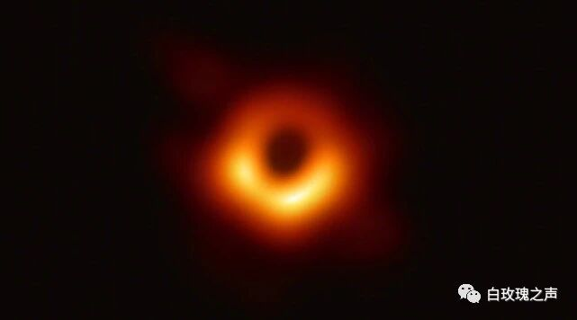
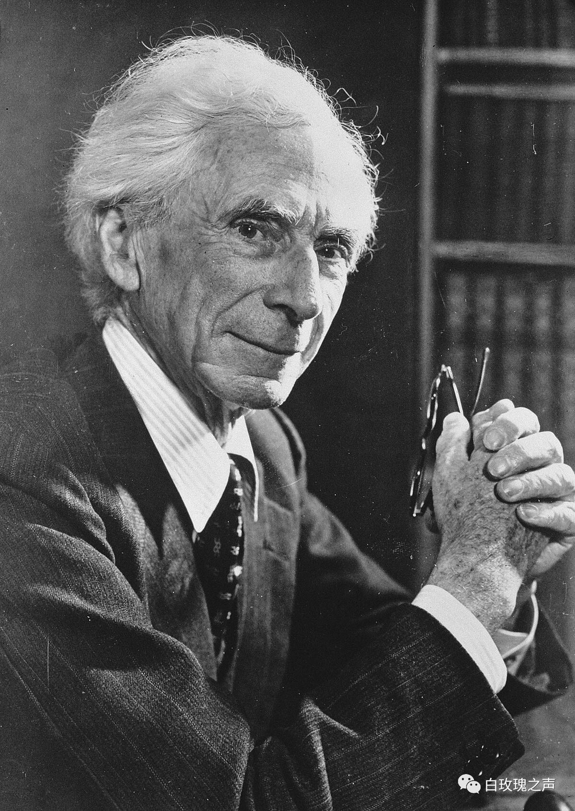
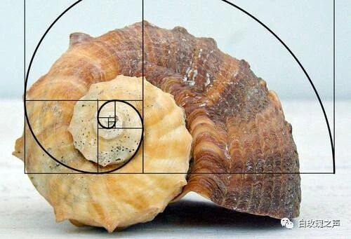
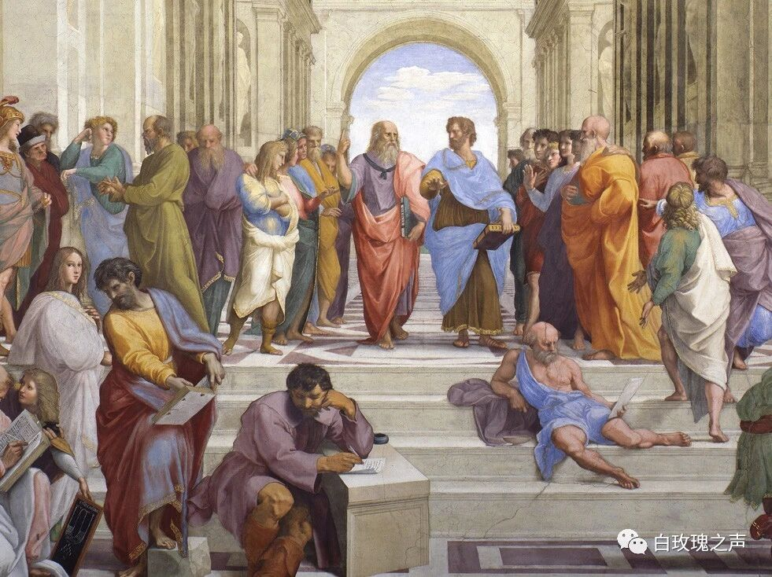
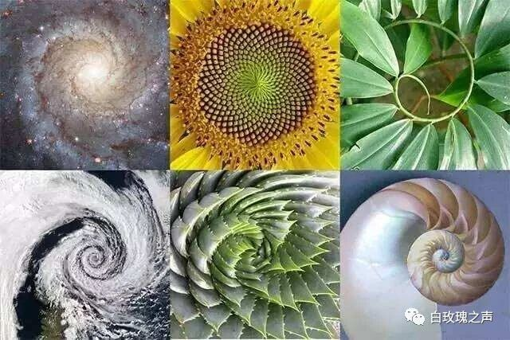
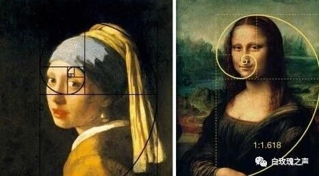
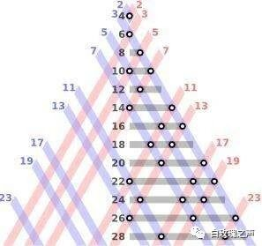
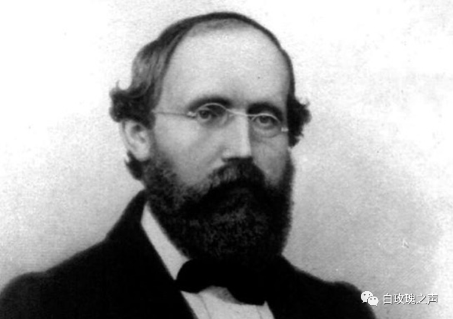
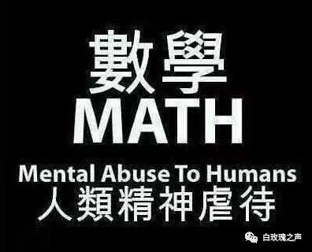

Why Mathematics Still Matters
"Humanity catches its first glimpse of a black hole." "New progress in the search for dark matter." We are drawn, again and again, to the discoveries of the natural sciences — yet toward mathematics, the discipline that has accompanied us through more than a decade of schooling, we feel a curious indifference. Not only because it is hard, but because it seems more abstract, more detached from the world, more distant from the project of understanding nature itself. But is that really so?

In most cases, a mathematical proof rests on logic, not on direct observation of the natural world. Take the sentence: If 2+2=5, then Russell is a bishop. The two clauses seem utterly unrelated. And yet, in logic, the statement holds.
Proving it does not involve leafing through encyclopedias to check whether Russell was in fact a bishop, nor arguing over whether 2+2 really equals 5. What we are discussing is something detached from reality — pure logic. In the language of logic, a sentence like this takes the form "if p, then q." If p is false, then regardless of whether q is true or false, the whole statement is true.

In other words, "2+2=5" is itself false, which makes "If 2+2=5, then Russell is a bishop" automatically true. A mathematical proof, then, begins with a set of definitions, axioms, and theorems and, through deductive reasoning, arrives at its conclusion — largely without reference to the physical world.
Following that line of thought, some go so far as to call mathematics a game invented by mathematicians, a pastime untethered from fact. After all, we cannot step into the world and prove that one plus one must equal two. Scientific proof, by contrast, distills laws from piles of observation and experiment; if the facts change, the rules must change with them.
Physics studies the interactions between things; chemistry studies the composition of matter. Perhaps this is why physics and chemistry are called empirical sciences, while mathematics is called a formal science — "formal" here not in the colloquial sense of "formalist," but in the technical sense.

So is mathematics really just a chess game mathematicians play to pass the time? If it were only that, there would be no need for it to live in our textbooks.
It doesn't seem to be quite that, either. Whenever we turn to the empirical sciences to make sense of the world, we cannot do without mathematics. This usefulness can be traced all the way back to ancient Greece. Greek mathematics was unlike the mathematics of ancient China or the Arab world: it was not confined to measurement and computation (however practical those may be), but grew out of the human need to puzzle at existence, out of the desire to describe the vastness of the cosmos — a debt owed, in part, to Greek philosophy. The Greeks discovered that, just as the theorems of natural science can, numbers too can abstract the patterns running through all things.

A famous example is the Fibonacci sequence. Each term is the sum of the two preceding ones, and the ratio between consecutive terms approaches 1.618 — the golden ratio. The diameters of successive spirals on a sunflower's seed head stand in a ratio of about 1.618; so do the spirals of a nautilus shell, and so do certain proportions of the human body.

Yet, regrettably, we do not know why it is only certain molluscs, certain bodily proportions, that obey the golden ratio. Piling up experience is not enough to give birth to a scientific law.

To drive home the limits of inductive reasoning — that old workhorse of empirical science — let me borrow another example from mathematics. In 1742, the German mathematician Christian Goldbach conjectured that every even number greater than 2 can be written as the sum of two primes. Pick any even number you like, and, the conjecture claims, you can always find two primes that add up to it.

Pick 8: the two primes are 3 and 5. Pick 42: 13 plus 29. A mountain of evidence suggests the conjecture is correct. But the even numbers are infinite; we cannot verify them one by one. A counterexample may be lying in some unchecked corner, waiting to deal a sudden blow — a reminder that not every even number greater than 2 need be the sum of two primes. We need a logical argument to establish that the claim holds for all such even numbers. Sadly, almost three centuries on, Goldbach's conjecture still awaits that proof.

A mathematical proof, then, is more abstract and more pure; a scientific investigation hinges on fact. But to articulate the universal laws behind those facts, the logical reasoning of mathematical proof is not merely applicable to science — it is necessary. And yet — what if we ourselves are only the turkeys of the Farmer's Theory?
The Farmer's Theory goes like this. On a farm there lives a flock of turkeys, and every day at eleven in the morning the farmer brings them their feed. A scientist among the turkeys observes this phenomenon and, after nearly a year without exception, formulates the great law of its universe: Every day at eleven, food descends from the heavens. On Thanksgiving morning it announces this law to its fellow turkeys. Eleven o'clock comes. No food descends. The farmer walks in instead, and takes them all away.
Are all our methods of inquiry fated, one day, to come undone? Along humanity's long path of exploring nature, our methods have stumbled again and again — hemmed in, at times, by the very constraints of the methods themselves. And yet it is precisely because of these methods that we have been able to glimpse, through reason, the beauty of the natural world. So before you lift your eyes to the night sky and ponder the cosmos — learn some math first.
